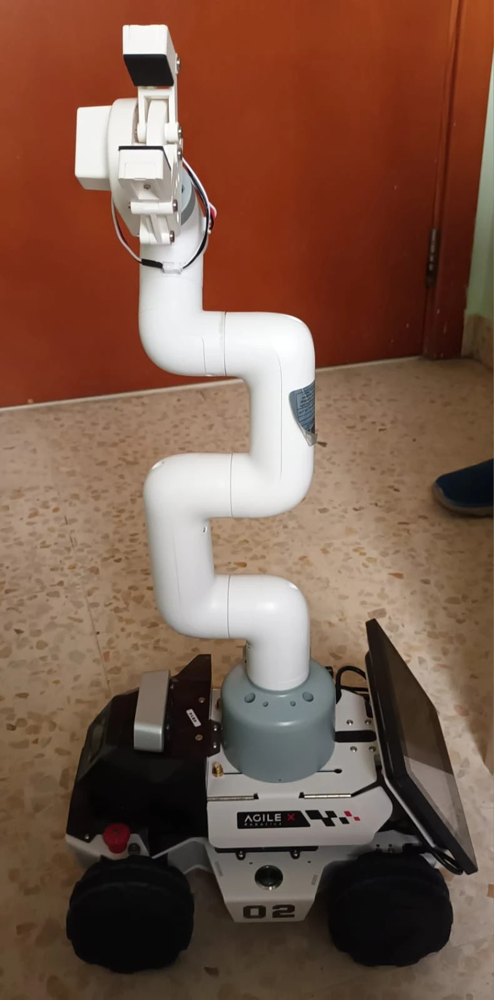

01 The problem
Illegal industrial dumping into the esteros of Manila's Pasig River basin is linked to cholera, typhoid and heavy-metal exposure. Fixed sensors can't move. Manual sampling is risky and lab results take weeks.
BITS Pilani, Dubai Campus · Robotics prototype
ba·ya·ni — Tagalog for hero
A robot that patrols urban creeks, spots pollution with on-board AI, pins each hotspot on a map and takes a water sample. No lab queue. No human in the loop.

Illegal industrial dumping into the esteros of Manila's Pasig River basin is linked to cholera, typhoid and heavy-metal exposure. Fixed sensors can't move. Manual sampling is risky and lab results take weeks.
Bayani-6 learns what clean water looks like, then flags anything that doesn't fit: oil sheens, sludge, foam, weed mats. It stops, records its exact SLAM position and dips its arm to collect a sample.
Every hotspot is written to a CSV and turned into a contamination heatmap, so city teams can trace pollution back to the pipe it came from instead of guessing.
| ID | X (m) | Y (m) | Score | Appearance | Sample |
|---|
No hotspots yet. Press Run to start the patrol.
Browser simulation of the Bayani-6 mission loop. Map, telemetry and camera feed are generated live for demonstration.
System architecture · ROS 2 Humble
Everything runs on the robot's Jetson. No cloud, no remote operator. These are the nodes and topics the live mission simulates.
Nav2 drives a fixed waypoint route along the creek bank while Cartographer keeps a live LiDAR map.
The Orbbec RGB-D camera streams the water surface straight into the Jetson.
A patch-based anomaly model, trained only on 60 s of clean water, scores every frame from 0 to 1.
Score above the trigger (0.8 by default) and not a known hotspot? The master node pauses Nav2.
The robot's exact (X, Y) comes from the SLAM transform tree via tf2.
The myCobot arm runs a pre-planned dip sequence: descend, hold for 3 s, stow.
The hotspot is appended to hotspots.csv, the heatmap updates and the patrol resumes.
Pollution doesn't come in tidy labelled classes. A slick can be rainbow or grey; foam, sludge and weeds change with light and season. Instead of training on thousands of labelled pictures of dirt, Bayani-6 learns one thing really well: what normal water looks like. Anything that doesn't fit gets a high score.
Unmodified off-the-shelf platform
No custom hardware. Every capability in Bayani-6 is software running on a stock robot, which keeps it cheap to copy for other cities.